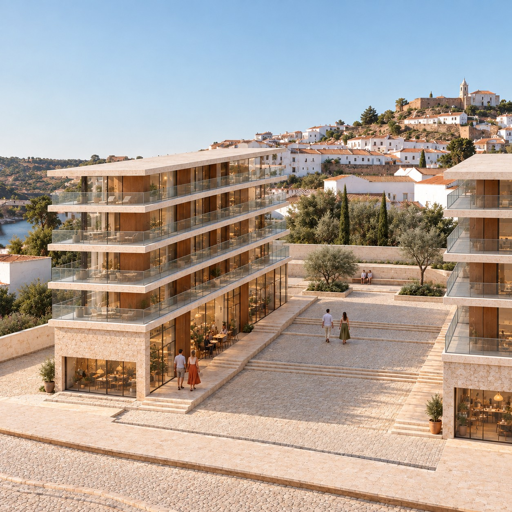
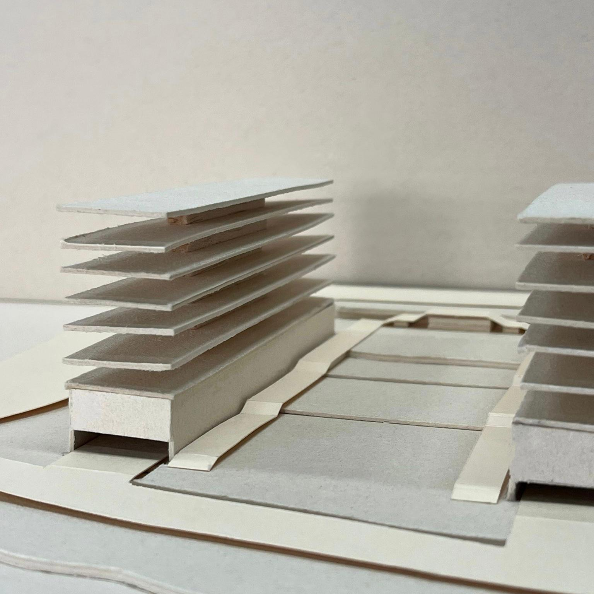
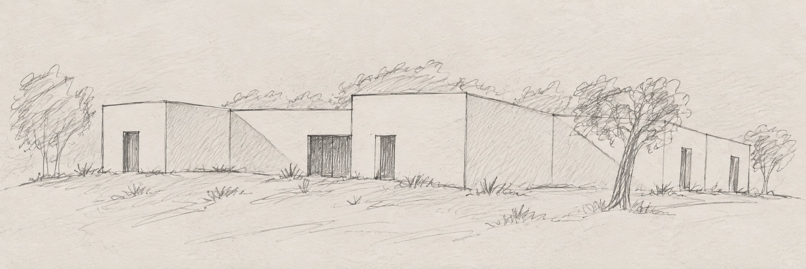
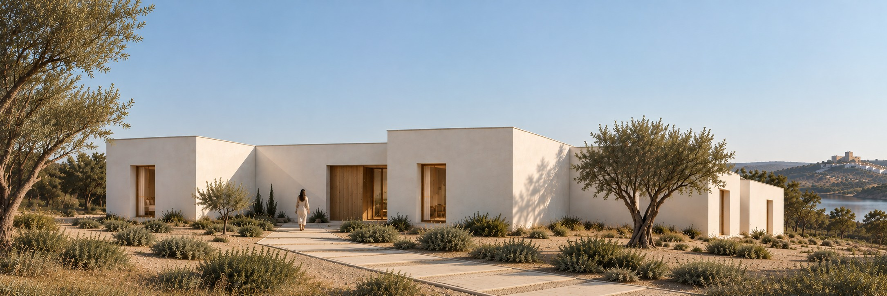
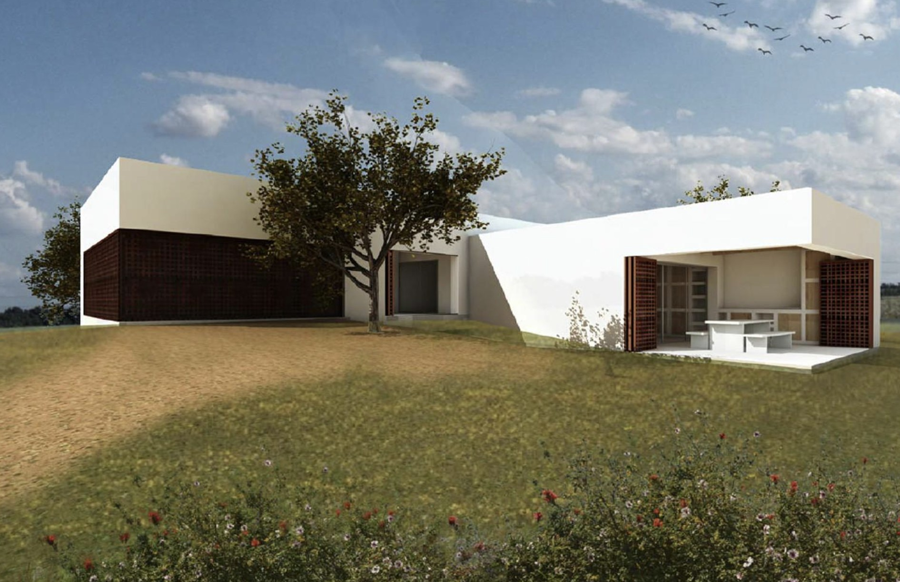
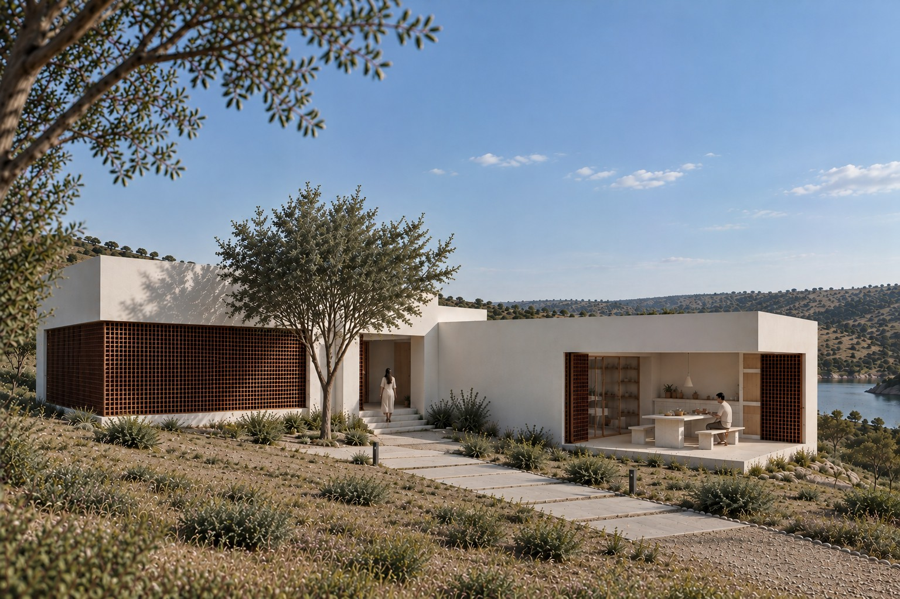

MÉRTOLA
SÍTIO 37.63N

TERRITÓRIO E LUGAR
/01NUTS (NUTS 2024, Reg. 2023/674): NUTS I PT1 Continente (grandes regiões) · NUTS II PT18 Alentejo (Évora, 47 municípios, 4 NUTS III, CCDR — política regional) · NUTS III Baixo Alentejo (diagnóstico fino; CIMBAL 2009 Beja; Guadiana/Alqueva, montado, mina, fronteira Andaluzia).
13 municípios: Aljustrel, Almodôvar, Alvito, Barrancos, Beja, Castro Verde, Cuba, Ferreira do Alentejo, Mértola, Moura, Ourique, Serpa, Vidigueira (62 freguesias). 7 freguesias de Mértola: Alcaria Ruiva, Corte do Pinto, Espírito Santo, Mértola, Santana de Cambas, São João dos Caldeireiros, U.F. S. Miguel do Pinheiro/S. Pedro de Solis/S. Sebastião dos Carros. Mértola = 6.º maior município PT (1 292,87 km²). Sítio: 37.632744°N -7.668297°W, 63.1 m.
| Indicador | Mértola | NUTS III | Ano | Fonte/tabela |
|---|---|---|---|---|
| População residente | 6206 | 114863 | 2021 | INE Censos 0012276 / Pordata População Residente |
| Variação 2011–2021 (%) | -14,7 | -9,3 | 2011–21 | INE Censos Resultados Definitivos / Pordata |
| Área (km²) | 1292,87 | 8542,72 | 2024 | INE Superfície NUTS-2024 / Pordata (INE/DGT) |
| Densidade (hab/km²) | 4,8 | 13,4 | 2021 | INE Densidade NUTS-2024 (cálculo) |
| Índice envelhecimento Censos | 418,3 | 217,9 | 2021 | INE 0012276 (2284/546; 31694/14543) / Pordata 458 |
| Índice envelhecimento estimativa | 414,2 | 210,2 | 2025 | INE 0012909 rev.22/06/2026 / Pordata |
| Proporção 65+ (%) | 36,8 | 27,6 | 2021 | INE 0012276 |
| Alojamentos total (clássicos) | 8675 (8664) | 85741 (85332) | 2021 | INE 0012500 Dim3 T/11 / Pordata Alojamentos |
| Superior completo (%) HM | 9,39 | 14,83 | 2021 | INE 0012316 / Pordata Escolaridade-207 |
| Taxa desemprego (%) HM | 6,67 | 8,10 | 2021 | INE 0012328 / Pordata Emprego |
| Poder compra IpC PT=100 | 70,42 | 86,45 | 2023 | INE 0014580 / Pordata Rendimentos-209 |
| Poder compra IpC PT=100 (série ant.) | 68,89 | 85,24 | 2021 | INE 0008614 NUTS-2013 |

Quadro INE/PORDATA (EXTRAÇÃO API INE 2026-09-24). Pordata (FFMS) fonte INE; células JS exigem print manual.
NOVE DIMENSÕES (ESTADO · FONTE · IMPLICAÇÃO)
1 · Paleta
Estado — Verão seco: verde mato, ocre xisto, Guadiana encaixado, branco-bege.
Fonte — Ortofoto 23/09/2026.
Implicação — Terra-cal-madeira.
2 · Solos
Estado — Xisto/grauvaque Formação Mértola, litossolos erosíveis.
Fonte — LNEG 46-D + PDM/REN a confirmar.
Implicação — Sondagem, drenagem.
3 · Bio
Estado — PNVG + RN2000; azinho, esteva; Bonelli; lince.
Fonte — ICNF + eBird cidadão.
Implicação — Inventário, nativas.
4 · Sísmico
Estado — Baixa-moderada; S Mértola M0.8–1.5 08/2026.
Fonte — IPMA + EC8/PDM a confirmar.
Implicação — EC8-PT.
5 · Cheia
Estado — 63.1 m fora leito; escorrência encosta.
Fonte — APA PGRI RH7 T100 a sobrepor.
Implicação — Margens, soleiras.
6 · Incêndio
Estado — Perigosidade estival alta; histórico parcela desc.
Fonte — ICNF SGIF + PMDFCI a confirmar.
Implicação — Faixa, M1.
7 · Poluição/ruído
Estado — Baixo; N122 difusa.
Fonte — APA/PDM sem medições.
Implicação — Medir, afastar.
8 · Serviços
Estado — Vila 0.5–1 km: CM, saúde, escolas, museu.
Fonte — CM + ULSBA.
Implicação — Acesso, acessibilidade.
9 · Arquitetura
Estado — Xisto/taipa/cal; sem edifício no pin.
Fonte — CAM 2015 + UNESCO 6209.
Implicação — Baixa contextual, levantamento.
CLIMA
/02Síntese EPW + IPMA + Csa · duas regras de volumetria (P3)
Análise: Csa; verão seco (Jul 2,7/Ago 6,0 vs 81–86); NW 4,6 m/s*; 596 mm; máx 92,6 em 21/10/20; quente fim Jul–mid Set (31,9 dias ≥35); extremos 45,4/−4,2; amplitude 13–17 = massa + flush; sombra S/W + pátio.
*Vento/radiação só EPW (IPMA fiche só T/Prec; Portal inacessível) — provisórios, confirmar EMA 843. Estrangeiros ASHRAE/Cfa rejeitados.
R1 — Barra compacta E-W + pátio a S-SE, W cego, NW operável alto.
R2 — Massa xisto/taipa + cobertura clara ventilada, vãos S controlados, NW para flush, sem vidro W sem pala.
CULTURA
/03Três regras vernáculas · duas obras · uma tendência, com créditos (P4)

R1 — Taipa/xisto + cal
Paredes mestras com massa + reflexão; ex. intramuros e montes. Fonte: Rosado/Costa et al.

R2 — Morada sem corredor
Adaptada ao declive, cozinha a tardoz + quintal/cisterna; ex. baixa rua Direita/porto vs alta. Mesmo fonte.

R3 — Vãos, pátios e chaminé
Vãos pequenos, panos/pátios de sombra + ventilação; ex. centro e souk. FIM

Obra A — Núcleo de Arte Islâmica (antigo celeiro, Porta da Ribeira) — autoria: Cláudio Torres e Santiago Macias (+ Alegria/Ramôa) — 2001 (21/12). Coleção séc. 9–13 das escavações da Alcáçova. Museu

Obra B — Casa Romana (cave dos Paços, Praça Luís de Camões; pós-incêndio 1982/achados 1984; arquiteto individual não nomeado — declarado) — CM/CAM — 1988, remod. 2012/2017. Museu
Estado de confirmação: A e B confirmadas via museudemertola.pt; verificação no local pendente (peças, atelier, município).
Uma tendência — Mértola Vila Museu: museu difuso de 14 núcleos + Festival Islâmico bienal + Artesanato→Design. FIM · RR 2022
SWOT
/04FORÇAS
Vila Museu + PNVG/RN2000 adjacente – capital cultural/paisagem.
Folga edificada: 8675 aloj./6206 hab. 2021 INE 0012500/0012276 – reabilitar primeiro.
FRAQUEZAS
418,3 índice + 36,8% 65+ 2021 INE 0012276, só 9,39% superior INE 0012316.
IpC 70,42 2023 INE 0014580, densidade 4,8 INE – mercado frágil.
OPORTUNIDADES
Csa, amplitude 13-17°C, NW 4.6m/s verão P3 – massa+flush+pátio.
Encosta 63.1m fora leito, 0.5-1km vila/serviços – coser N122-Guadiana.
AMEAÇAS
Trombas outono 92.6mm 21/10/20 + fogo estival ICNF.
Natura/REN/hídrico + sismo por confirmar.
In Between but Mértola
/05

Prompt: BUILDING - Programme, volume, fixed elements and viewpoints - This is an architectonic object, two residential buildings with a space between them. CONTEXT - Site, city, vegetation, uses and human presence. - This is a modern residential building, located in Mértola, Portugal. I want some human presence. Also I want the buildings to relate to the context with the location that I ended to you. Try to follow the image perspective. MATERIAL - Matter, texture, ageing and level of detail. - I want the buildings to be in clear marble with glass railings and wood details along the building. LIGHT - Time, orientation, atmosphere, intensity and contrast. - Daylight scene. Calm atmosphere like the atmosphere of the landscape. STYLE - Visual language, realism, framing and references - Photorealistic style. PRESERVE - What must be preserved and unchanged - I want to preserve the volumes and the space between them.
Patio House — PROMONTORIO but Mértola
/06

Prompt: BUILDING — Programme, volume, fixed elements and viewpoint. - This is an architectonic object, a house. CONTEXT — Site, city, vegetation, uses and human presence. - This is a contemporary house. And is located in Mértola Portugal. I want some human presence. Also i want that the house to relate to the context with the location that i sended to you. Try to follow the image perspetive. MATERIAL — Matter, texture, ageing and level of detail. - I want the building to have the colour white. LIGHT — Time, orientation, atmosphere, intensity and contrast. - This daylight scene. Calm stmosphere, the atmosphere of a landscape. STYLE — Visual language, realism, framing and references - Photorealist style. PRESERVE — What must be preserved and unchanged - I want to preserve the volumes and the green spaces.
Casa do Crato but Mértola
/07

Prompt: BUILDING - Programme, volume, fixed elements and viewpoint. - This is an architectonic object, a house. CONTEXT - Site, city, vegetation, uses and human presence. - This is a contemporary house. And is located in Mértola Portugal. I want some human presence. Also i want that the house to relate to the context with the location that i sended to you. Try to follow the image perspetive. MATERIAL - Matter, texture, ageing and level of detail. - I want the building to have the colour white. LIGHT - Time, orientation, atmosphere, intensity and contrast. - This daylight scene. Calm stmosphere. STYLE - Visual language, realism, framing and references - Photorealist style, from the observer's point of view. PRESERVE - What must be preserved and unchanged - I want to preserve the volumes and the tree in front of the house.
ENQUADRAMENTO REGULAMENTAR E QUADROS DO LOTE
/08Quadros temáticos verificados e Quadro Síntese do Lote · Fontes primárias de suporte
Uso Pretendido: [habitação] · Pisos previstos: [1] · Área de construção prevista: [200 m²]
Data de Consulta de Referência: [26/10/2026]
1. Regulamento do PDM de Mértola
| Item | Exigência (diploma + artigo/secção) | Valor ou critério (SI) | Citação literal (máx. 30 palavras) | Efeito na parcela / condição para o projeto | Data de consulta |
|---|---|---|---|---|---|
| 1. Categoria de solo e usos compatíveis | Regulamento do PDM de Mértola, Secção IV, Artigo 24.º, n.º 1. | Solo Rústico (Espaços Agrícolas, Agro-silvo-pastoris e Naturais/Culturais). Uso habitacional permitido apenas se adstrito a instalações de apoio e habitação para pessoal permanente. | "Nos espaços agrícolas, agro-silvo-pastoris e naturais e culturais é licenciável a realização de obras de construção destinadas a instalações de apoio (...) e habitações para pessoal permanente." | A pretensão de habitação numa parcela rústica de 10 000 m² só é viável se for destinada ao pessoal permanente da exploração. | 26/10/2026 |
| 2. Índice de utilização e área de construção máxima | Regulamento do PDM de Mértola, Secção IV, Artigo 24.º, n.º 2. | COSb máximo = 0,04 total, incluindo um máximo de 0,02 para habitação. Área de construção habitacional máxima = 10000 m2×0,02=200 m2. Área de construção total máxima = 10000 m2×0,04=400 m2. | "Coeficiente bruto de ocupação do solo (COSb): 0,04, para construções de apoio às actividades relativas à respectiva classe de espaços, incluindo um máximo de 0,02 para habitação;" | A área bruta de construção máxima permitida para uso habitacional na parcela está estritamente limitada a 200 m². | 26/10/2026 |
| 3. Cércea / altura máxima e número de pisos | Regulamento do PDM de Mértola, Secção IV, Artigo 24.º, n.º 2. | Altura máxima dos edifícios (AeM) = 3,5 m. Número máximo de pisos (NpM) = 1 piso (permitidos 2 pisos apenas para adaptação à morfologia do terreno). | "Número máximo de pisos (NpM): um, com excepção de construções que para adaptação à morfologia do terreno poderão ter dois pisos; (...) Altura máxima dos edifícios (AeM): 3,5 m" | O projeto tem de prever uma edificação térrea (1 piso), sem exceder a altura de fachada/edifício de 3,5 m. | 26/10/2026 |
| 4. Afastamentos mínimos (vias, confrontações, logradouros) | SEM FONTE (Regulamento do PDM de Mértola, Artigo 24.º). | SEM FONTE (O regulamento não define afastamentos numéricos literais aos limites da parcela para habitação isolada em solo rústico). | SEM FONTE (Ausência de fixação de afastamentos às confrontações no Artigo 24.º). | Fica condicionado à verificação suplementar do RGEU e das servidões rodoviárias/hídricas aplicáveis. | 26/10/2026 |
| 5. Área de implantação máxima e área impermeabilizada máxima | Regulamento do PDM de Mértola, Artigo 24.º, n.º 2 (para implantação); SEM FONTE (para área impermeabilizada máxima). | Área de implantação máxima = 400 m² (COSb=0,04×10000 m2=400 m2). Área impermeabilizada máxima: SEM FONTE. | "Coeficiente bruto de ocupação do solo (COSb): 0,04, para construções de apoio às actividades relativas à respectiva classe de espaços" | A ocupação máxima do solo pela construção não pode exceder 400 m²; a taxa de impermeabilização carece de especificação no PDM. | 26/10/2026 |
| 6. Estacionamento mínimo exigido para o uso | SEM FONTE (Regulamento do PDM de Mértola, Artigo 24.º / Artigo 31.º, n.º 7). | SEM FONTE (O regulamento não especifica parâmetros numéricos de estacionamento privado para habitação unifamiliar em solo rústico). | SEM FONTE (Artigo 31.º, n.º 7 indica apenas que "para estacionamento seguem-se as normas estabelecidas pela legislação em vigor"). | O dimensionamento de estacionamento depende exclusivamente da legislação nacional geral em vigor. | 26/10/2026 |
| 7. Condicionantes sobrepostas à parcela | Regulamento do PDM de Mértola, Artigo 18.º; Termos de Referência, Secções 3.3 e 3.4. | Parcela abrangida pela REN (erosão/aquíferos), Parque Natural do Vale do Guadiana (POPNVG), ZPE e Domínio Hídrico (confrontação a Este com o Rio Guadiana). | "Nas áreas da estrutura biofísica fundamental, para além do que está estipulado no regulamento da REN não são permitidas as acções que ponham em risco a biodiversidade" | Interdição de obras nas faixas de proteção e margem do Rio Guadiana e obrigatoriedade de emissão de parecer prévio favorável das entidades competentes (ICNF/CCDR). | 26/10/2026 |
| 8. Servidões não edificandi ou restrições de altura | Regulamento do PDM de Mértola, Artigos 65.º, 66.º e 67.º; Termos de Referência, Secção 3.6. | Raio não edificável de 100 m em redor de furos de captação de água; faixa de 5 m ao longo de coletores de esgoto; distâncias de segurança a linhas elétricas. | "são interditas as seguintes acções: construção (...) num perímetro de 100 m em volta dos furos de captação" | Condiciona a localização exata do edifício para garantir os afastamentos de proteção às redes e captações de água. | 26/10/2026 |
2. Regime Jurídico da Urbanização e Edificação (RJUE)
| Item | Exigência (diploma + artigo/secção) | Conteúdo/valor | Citação literal (máx. 30 palavras) | Obrigação para o futuro projeto | Data de consulta |
|---|---|---|---|---|---|
| 1. Tipo de operação urbanística e seu enquadramento | RJUE (Decreto-Lei n.º 555/99, na redação em vigor), Artigo 2.º, alíneas b) e j). | Exigência Legal: Qualifica-se como «Obras de construção» (criação de novas edificações) e constitui uma «Operação urbanística» sujeita ao regime de controlo prévio legal. | "«Obras de construção», as obras de criação de novas edificações;" | O projeto deve ser formalmente classificado como obra de construção nova e cumprir todos os requisitos legais aplicáveis. | 26/10/2026 |
| 2. Procedimento aplicável e justificação | RJUE, Artigo 4.º, n.º 2, alíneas c) e h). | Exigência Legal: Sujeito ao procedimento de Licenciamento (Licença), por se tratar de construção em área não abrangida por Plano de Pormenor, loteamento ou Unidade de Execução com parâmetros definidos, ou por incidir em área sujeita a servidões/restrições de utilidade pública. | "Estão sujeitas a licença: (...) c) As obras de construção, de alteração ou de ampliação em área não abrangida por: i) Plano de pormenor; ou ii) Operação de loteamento" | O promotor é legalmente obrigado a submeter um pedido de licenciamento dirigido ao Presidente da Câmara Municipal de Mértola. | 26/10/2026 |
| 3. Elementos instrutórios e peças exigidas | RJUE, Artigo 9.º, n.º 4 e n.º 12; Portaria n.º 320/2026/1. | Exigência Legal: Instruído com os elementos fixados na Portaria do Governo (projeto de arquitetura, memória descritiva, termos de responsabilidade, etc.). É proibido ao município exigir documentos não previstos em portaria (como cópias de Cartão do Cidadão, caderneta predial ou certidões caducadas). Quanto a minuta ou folha específica de cálculo de índices exigida como prática corrente: SEM FONTE. | "O pedido ou comunicação são acompanhados dos elementos instrutórios previstos em portaria dos membros do Governo responsáveis pelas áreas da modernização administrativa, da construção, das autarquias locais..." | Apresentar estritamente a instrução documental regulamentada na portaria nacional, recusando exigências municipais que constituam práticas correntes não previstas na lei. | 26/10/2026 |
| 4. Formatos e formalidades de entrega | RJUE, Artigo 8.º-A, n.º 1 e 8; Artigo 9.º, n.º 1. | Exigência Legal: Submissão obrigatoriamente desmaterializada através da Plataforma Eletrónica dos Procedimentos Urbanísticos (obrigatória a partir de 05/01/2026), com autenticação eletrónica legal do requerente. Permite submissão em metodologia BIM. | "A tramitação dos procedimentos previstos no presente diploma é realizada obrigatoriamente de forma desmaterializada, através da Plataforma Eletrónica dos Procedimentos Urbanísticos..." | Submeter o requerimento e peças em formato digital na plataforma eletrónica aplicável, garantindo formatos abertos e assinaturas digitais. | 26/10/2026 |
| 5. Termos de responsabilidade e seguro exigidos | RJUE, Artigo 10.º, n.º 1 a 3; SEM FONTE (para apólice de seguro exigida na submissão de licença inicial ordinária). | Exigência Legal: Termos de responsabilidade dos autores dos projetos (declarando a conformidade legal e regulamentar) e do coordenador de projetos (atestando a compatibilidade entre especialidades), acompanhados de prova de inscrição em associação profissional. Quanto a obrigação de apresentação de apólice de seguro no requerimento inicial de licença ordinária: SEM FONTE. | "O requerimento ou comunicação é sempre instruído com declaração dos autores dos projetos (...) e do coordenador dos projetos, que ateste a compatibilidade entre os mesmos." | Juntar termos de responsabilidade subscritos por técnicos com inscrição ativa em ordens profissionais e declaração de compatibilidade emitida pelo coordenador. | 26/10/2026 |
| 6. Consultas externas / pareceres previsíveis | RJUE, Artigo 13.º, n.º 1, 5 e 6; Termos de Referência de Mértola, Secção 3.4 e 7.2--. | Exigência Legal: Consultas promovidas em simultâneo pelo gestor do procedimento na plataforma eletrónica. Entidades previsíveis: ICNF (Parque Natural/ZPE), CCDR (REN) e Infraestruturas de Portugal (IP). Prazo geral de resposta de 20 dias (ou 45 dias úteis para ZPE/ICNF), considerando-se a ausência de resposta como concordância. | "A consulta às entidades que, nos termos da lei, devam emitir parecer (...) é promovida pelo gestor do procedimento, e é efetuada em simultâneo, através da plataforma eletrónica..." | O projeto deve prever a integração de condicionantes e obter pareceres favoráveis emitidos pelas entidades externas competentes. | 26/10/2026 |
| 7. Prazos aplicáveis e consequências do controlo sucessivo | RJUE, Artigo 23.º, n.º 1 e 2; Artigo 35.º, n.º 8; Artigos 98.º, 100.º-A e 101.º. | Exigência Legal: Prazo de deliberação municipal de 120 dias (Área Bruta de Construção ≤ 300 m²) ou 150 dias (ABC entre 300 m² e 2200 m²), sujeito a deferimento tácito. Em fiscalização sucessiva, infrações sujeitas a inviabilização da operação, embargo, demolição, reposição do terreno, responsabilidade civil solidária e coimas. | "A câmara municipal delibera sobre o pedido de licenciamento: a) No prazo de 120 dias, no caso de obras de construção (...) em imóvel com área bruta de construção igual ou inferior a 300 m2" | Executar a obra em estrita conformidade com o projeto aprovado e a licença emitida, sob pena de embargo, contraordenações e responsabilidade civil. | 26/10/2026 |
3. Regulamento Geral das Edificações Urbanas (RGEU)
| Item | Artigo | Valor ou critério (SI) | Citação literal (máx. 30 palavras) | Condição a respeitar no projeto | Data de consulta |
|---|---|---|---|---|---|
| 1. Pé-direito livre e altura entre pisos na habitação | RGEU, Artigo 65.º, n.º 1 e 2. | Altura mínima piso a piso = 2,70 m. Pé-direito livre mínimo geral = 2,40 m. Exceções (vestíbulos, corredores, I.S., despensas, arrecadações) = 2,20 m. | "A altura mínima, piso a piso, em edificações destinadas à habitação é de 2,70m (...), não podendo ser o pé-direito livre mínimo inferior a 2,40 m". | O projeto de arquitetura deve assegurar pé-direito livre de pelo menos 2,40 m nos compartimentos habitáveis e 2,20 m nas zonas de circulação e serviço. | 26/10/2026 |
| 2. Áreas e dimensões mínimas dos compartimentos habitacionais | RGEU, Artigos 66.º, 67.º e 69.º. | Cozinha: ≥ 6 m² (largura ≥ 1,70 m). Quarto casal: 10,5 m² a 12 m². Quarto simples: 6,5 m². Sala: 10 m² (T0) a 16 m² (T3+). Área bruta mínima: 35 m² (T0), 52 m² (T1), 72 m² (T2), 91 m² (T3). Diâmetros/larguras mínimas: 2,10 m (área < 9,5 m²), 2,40 m (9,5–12 m²), 2,70 m (≥ 12 m²). | "Os compartimentos de habitação não poderão ser em número e área inferiores aos indicados (...) Quando a respectiva área for menor que 9,5 m2, a dimensão mínima será 2,10 m". | A distribuição interior deve respeitar as superfícies úteis e os diâmetros mínimos de inscrição definidos para a tipologia do fogo. | 26/10/2026 |
| 3. Vãos de iluminação natural (comunicação direta com o exterior) | RGEU, Artigos 71.º, n.º 1 e 73.º. | Área total de vãos ≥ 1/10 da área útil do compartimento, com mínimo de 1,08 m² (no tosco). Afastamento de muros/fachadas fronteiras ≥ 0,5 x altura do obstáculo (mínimo de 3,00 m), com faixa livre lateral de 2,00 m para cada lado do eixo. | "serão sempre iluminados e ventilados por um ou mais vãos (...) cuja área total não será inferior a um décimo da área do compartimento com o mínimo de 1,08 m2". | Cada compartimento habitável deve ter janelas diretas para o exterior dimensionadas a pelo menos 10% da área do espaço (mín. 1,08 m²) com desafogo frontal de 3 m. | 26/10/2026 |
| 4. Condições de ventilação dos espaços | RGEU, Artigos 71.º, 72.º, 87.º e 109.º. | Ventilação transversal obrigatoriamente garantida por janelas em fachadas opostas. Instalações Sanitárias: vão direto para o exterior com área ≥ 0,54 m² (abertura ≥ 0,36 m²) ou sistema de ventilação natural/forçada. Cozinha: evacuação obrigatória de fumos e gases por conduta ou dispositivo próprio. | "Deverá ficar assegurada a ventilação transversal do conjunto de cada habitação, em regra por meio de janelas dispostas em duas fachadas opostas.". | Assegurar ventilação cruzada na habitação e prever condutas autónomas de exaustão de fumos na cozinha e vãos/condutas de renovação de ar nas I.S.. | 26/10/2026 |
| 5. Logradouros, afastamentos e condições de salubridade | RGEU, Artigos 59.º, 60.º, 62.º (n.º 2) e 76.º. | Distância mínima entre fachadas com vãos de habitação ≥ 10,00 m. Logradouro: profundidade ≥ 0,5 x altura da fachada (mínimo de 6,00 m), área livre e descoberta ≥ 40 m². Faixa perimetral impermeável de proteção ≥ 1,00 m. | "a distância mínima entre fachadas de edificações nas quais existam vãos de compartimentos de habitação não poderá ser inferior a 10 metros. (...) profundidade não inferior (...) mínimo de 6 metros". | O edifício deve garantir o recuo mínimo de 10 m entre fachadas habitáveis opostas e dotar o fogo de logradouro privativo com pelo menos 40 m² livres e faixa impermeabilizada de 1 m junto às paredes. | 26/10/2026 |
4. Acessibilidades (Decreto-Lei n.º 163/2006)
| Item | Referência (artigo/secção do diploma ou do anexo) | Valor ou critério (SI) | Citação literal (máx. 30 palavras) | Condição a respeitar no projeto | Data de consulta |
|---|---|---|---|---|---|
| 1. Percurso acessível (via pública, entrada principal e todos os espaços) | DL n.º 163/2006, Artigo 2.º, n.º 3; Anexo, Secções 2.1.1, 3.3.1 e 4.3.1. | Percurso contínuo sem degraus. Largura livre ≥1,20 m nos canais de circulação exteriores/comuns e ≥1,10 m nos corredores interiores do fogo. | "Os edifícios e estabelecimentos devem ser dotados de pelo menos um percurso, designado de acessível, que proporcione o acesso seguro e confortável das pessoas com mobilidade condicionada". | Garantir um itinerário totalmente acessível e contínuo desde a entrada do lote/terreno até à entrada principal da habitação e aos seus espaços interiores. | 26/10/2026 |
| 2. Portas de entrada/saída — largura útil | DL n.º 163/2006, Anexo, Secções 2.2.3, 3.3.8 e 4.9.1. | Largura útil ≥0,87 m na porta de entrada/saída principal do edifício; largura útil ≥0,77 m nas portas interiores de compartimentos habitáveis. | "As portas de entrada/saída dos edifícios e estabelecimentos devem ter um largura útil não inferior a 0,87 m (...) Os vãos de porta devem possuir uma largura útil não inferior a 0,77 m". | A porta de entrada da habitação deve garantir pelo menos 0,87 m de largura útil livre (aberta a 90°) e as portas internas/de compartimentos no mínimo 0,77 m. | 26/10/2026 |
| 3. Circulações (patamares, galerias e corredores) e zonas de manobra | DL n.º 163/2006, Anexo, Secções 3.3.1, 3.3.2 e 4.4.1. | Corredores habitacionais com largura ≥1,10 m (troços curtos ≤1,50 m sem portas podem ter 0,90 m). Zona de manobra para rotação de 360° (diâmetro ≥1,50 m) no hall de entrada e cozinha. | "Nos espaços de entrada das habitações deve ser possível inscrever uma zona de manobra para rotação de 360° (...) Os corredores (...) das habitações devem ter uma largura não inferior a 1,1 m". | Dimensionar a entrada e a cozinha de forma a inscrever um círculo livre de 1,50 m de diâmetro e manter a largura mínima dos corredores em 1,10 m. | 26/10/2026 |
| 4. Corrimãos | DL n.º 163/2006, Anexo, Secções 3.3.9, 4.11.1 e 4.11.2. | Diâmetro/largura de preensão entre 0,035 m e 0,05 m; espaço livre em relação à parede ≥0,035 m. | "Os corrimãos e as barras de apoio devem ter um diâmetro ou largura das superfícies de preensão compreendido entre 0,035 m e 0,05 m". | Caso existam rampas ou elementos de apoio no percurso, aplicar corrimãos anatómicos com diâmetro de 3,5 cm a 5 cm e afastamento mínimo da parede de 3,5 cm. | 26/10/2026 |
| 5. Acesso vertical (elevador, rampa ou plataforma) | DL n.º 163/2006, Anexo, Secções 2.5.1, 3.2.1 e 3.3.6. | Isento de elevador (edifício habitacional de 1 piso). Rampas de acesso na habitação: largura ≥0,90 m; inclinação ≤6% (desníveis ≤0,60 m) ou ≤8% (desníveis ≤0,40 m). | "Se existirem rampas que façam parte do percurso de acesso a compartimentos habitáveis, devem satisfazer o especificado na secção 2.5, com excepção da largura que pode ser não inferior a 0,9 m". | Sendo uma edificação de rés do chão (1 piso), prescinde de ascensor; eventuais rampas para vencer soleiras/desníveis devem ter largura mínima de 0,90 m e inclinação de 6% a 8%. | 26/10/2026 |
| 6. Instalações sanitárias adaptadas | DL n.º 163/2006, Anexo, Secções 2.9.19 e 3.3.4. | Pelo menos 1 I.S. com lavatório, sanita, bidé e banheira (ou base de duche de 0,80 m×0,80 m se garantida futura banheira). Zona de manobra para rotação de 360° (diâmetro 1,50 m) e paredes adaptáveis para barras. | "Em cada habitação deve existir pelo menos uma instalação sanitária que satisfaça as seguintes condições: 1) Deve ser equipada com, pelo menos, um lavatório, uma sanita, um bidé e uma banheira". | Garantir na habitação 1 I.S. adaptável que permita inscrever um diâmetro de manobra livre de 1,50 m (fora do varrimento da porta) e com reforço de parede para barras de apoio. | 26/10/2026 |
| 7. Lugares de estacionamento reservados | SEM FONTE (DL n.º 163/2006, Anexo, Secções 2.8 e 3.2.6). | SEM FONTE (O diploma define quotas de lugares reservados para edifícios de habitação coletiva/espaços comuns no n.º 3.2.6, não prevendo obrigatoriedade de lugar reservado para fogo unifamiliar isolado em lote próprio). | SEM FONTE (Ausência de norma vinculativa para dotação de lugar reservado em habitação unifamiliar/privada isolada). | Não existe obrigação legal de dimensionamento ou reserva de lugar adaptado sob a Secção 3.2.6 para moradia unifamiliar privada isolada. | 26/10/2026 |
| 8. Exceções aplicáveis e condições em que podem ser invocadas | DL n.º 163/2006, Artigo 10.º, n.º 1, 2 e 5. | Não exigível se as obras forem desproporcionadamente difíceis, exijam meios económico-financeiros desproporcionados ou afetem património classificado, exigindo fundamentação e autorização técnica. | "o cumprimento das normas técnicas de acessibilidade (...) não é exigível quando as obras necessárias à sua execução sejam desproporcionadamente difíceis, requeiram a aplicação de meios económico-financeiros desproporcionados". | A invocação de exceções exige instrução de fundamentação técnica/financeira no Plano de Acessividades do projeto, mantendo-se a obrigatoriedade de cumprir as restantes especificações praticáveis. | 26/10/2026 |
5. Desempenho Energético dos Edifícios (SCE — Decreto-Lei n.º 101-D/2020)
| Item | Exigência (diploma + artigo/secção) | Valor ou critério (SI) | Citação literal (máx. 30 palavras) | Condição a respeitar no projeto | Data de consulta |
|---|---|---|---|---|---|
| 1. Âmbito da operação (edifício novo ou grande intervenção) e requisitos aplicáveis | Decreto-Lei n.º 101-D/2020, Artigo 3.º, alínea i) e Artigo 6.º, n.º 1 e 10. | Edifício Novo. Deve ser classificado e projetado como edifício com necessidades quase nulas de energia (NZEB). | "Os edifícios novos devem ser edifícios com necessidades quase nulas de energia." | O projeto deve ser concebido para atingir o nível NZEB, cumprindo os requisitos de conforto térmico, desempenho energético e componentes técnicos estipulados para edifícios novos de habitação. | 26/10/2026 |
| 2. Requisitos de desempenho energético | Decreto-Lei n.º 101-D/2020, Artigo 4.º, n.º 1 e 3; Artigo 6.º, n.º 9. | Indicador numérico de utilização de energia primária expresso em kWh/(m2⋅ano), acompanhado por indicadores do uso de energia primária renovável. | "expressa por um indicador numérico de utilização energia primária em kWh/(m2.ano)." | O projeto tem de incluir a avaliação do consumo de energia primária e da fração renovável, devidamente calculados segundo a metodologia legal e validados por Perito Qualificado (PQ). | 26/10/2026 |
| 3. Condições de envolvente (transmitâncias, pontes térmicas, vãos, fatores solares) | Decreto-Lei n.º 101-D/2020, Artigo 6.º, n.º 4, alínea a) e n.º 10, alíneas a) e b); SEM FONTE (para tabelas com valores numéricos específicos). | SEM FONTE (Os limites numéricos de transmitância térmica U [W/(m2⋅K)] e fator solar ggl constam de portaria regulamentar complementar não presente nas fontes). | "Requisitos mínimos de desempenho energético relativos à envolvente dos edifícios, que visam, em particular, minimizar a ocorrência de patologias e limitar as necessidades de energia" | O projeto de arquitetura (envolvente opaca e envidraçada) deve ser dimensionado para minimizar patologias térmicas e conter as necessidades úteis de energia conforme a regulamentação aplicável. | 26/10/2026 |
| 4. Condições de ventilação e qualidade do ar interior | Decreto-Lei n.º 101-D/2020, Artigo 6.º, n.º 4, alínea b) e n.º 10, alínea c); Artigo 16.º, n.º 1; SEM FONTE (para caudais numéricos em m3/h). | SEM FONTE (Ausência de caudais numéricos regulamentares específicos para habitação nas fontes). Exigência legal de assegurar renovação e adequada filtragem do ar. | "Os edifícios novos ou renovados, incluindo os seus sistemas técnicos, são objeto de requisitos relativos à ventilação de espaços (...) com vista a assegurar uma adequada filtragem e renovação do ar." | Dimensionar e integrar no projeto sistemas de ventilação que garantam a renovação constante do ar e a qualidade do ar interior (QAI) para salubridade dos ocupantes. | 26/10/2026 |
| 5. Exigências sobre sistemas técnicos (climatização, ventilação, águas quentes) | Decreto-Lei n.º 101-D/2020, Artigo 6.º, n.º 4, alínea b) e n.º 10, alíneas d) e e); Artigo 10.º, n.º 1. | Requisitos obrigatórios de desempenho energético geral, dimensionamento adequado, instalação, ajustamento e controlo dos sistemas. | "garantir que os sistemas técnicos são adequados às necessidades e características do edifício, bem como às condições de utilização esperadas" | Os projetos das especialidades elétricas e mecânicas devem prever e dimensionar equipamentos de elevado rendimento e com comandos de regulação/controlo eficazes. | 26/10/2026 |
| 6. Produção de energia de fontes renováveis e restrições a combustíveis fósseis | Decreto-Lei n.º 101-D/2020, Artigo 3.º, alínea d); Decreto-Lei n.º 11/2025, Artigo 2.º (altera o Artigo 34.º, n.º 8 do DL 101-D/2020). | Já transposto: Necessidades energéticas cobertas em grande medida por renováveis locais. Fim do financiamento público a caldeiras autónomas a combustíveis fósseis a partir de 01/01/2025. Previsto na Diretiva (UE) 2024/1275: Meta de descarbonização progressiva do edificado. | "A partir de 1 de janeiro de 2025 deixam de ser concedidos incentivos financeiros à instalação de caldeiras autónomas a combustíveis fósseis" | O projeto deve priorizar sistemas de energia renovável (ex.: solar ou bombas de calor) e abster-se de dependência de sistemas autónomos a combustíveis fósseis. | 26/10/2026 |
| 7. Certificação energética (obrigação e classe aplicável) | Decreto-Lei n.º 101-D/2020, Artigo 18.º, n.º 1, alínea a); Artigo 20.º, n.º 2; Artigo 23.º, n.º 1. | Obrigatoriedade de emissão de Pré-certificado Energético (fase de projeto) e Certificado Energético (conclusão de obra). Validade de 10 anos. | "Pré -certificado energético, emitido para efeitos do disposto nas alíneas a) e b) do n.º 1 do artigo 18.º, antes do início da construção" | Obter previamente o Pré-certificado Energético subscrito por Perito Qualificado (PQ) para instrução do licenciamento e, no final da obra, a emissão do Certificado Energético. | 26/10/2026 |
6. Quadro Síntese do Lote
| Frente | Itens verificados | Condições imperativas | Condições condicionais / a confirmar | SEM FONTE |
|---|---|---|---|---|
| PDM | Categoria de solo e usos compatíveis (Artigo 24.º, n.º 1); Coeficiente de ocupação do solo e área de construção máxima (Artigo 24.º, n.º 2); Cércea / altura máxima e número de pisos (Artigo 24.º, n.º 2); Área de implantação máxima (Artigo 24.º, n.º 2); Condicionantes sobrepostas à parcela (Artigo 18.º; Termos de Referência, Secções 3.3 e 3.4); Servidões e restrições (Artigos 65.º, 66.º e 67.º; Termos de Referência, Secção 3.6). Data de consulta: 26/10/2026. | Enquadramento em Solo Rústico, sendo o uso habitacional estritamente condicionado a instalações de apoio e habitação para pessoal permanente da exploração (Regulamento do PDM de Mértola, Artigo 24.º, n.º 1); COSb máximo de 0,04 total e 0,02 para habitação, fixando a área máxima de construção habitacional em 200 m² (10 000 m² × 0,02) e a implantação máxima em 400 m² (Artigo 24.º, n.º 2); número de pisos máximo de 1 piso e altura máxima de edifício/fachada de 3,5 m (Artigo 24.º, n.º 2); interdição de obras nas faixas de proteção e margens do Domínio Hídrico / Rio Guadiana, exigindo parecer prévio favorável vinculativo (Artigo 18.º); raio não edificável de 100 m em redor de captações de água (Artigo 65.º), faixa de proteção de 5 m a coletores de esgoto (Artigo 66.º) e distâncias de segurança a linhas elétricas (Termos de Referência, Secção 3.6). | Comprovação prévia do vínculo da habitação pretendida ao pessoal permanente da exploração agrícola/agro-silvo-pastoril (Artigo 24.º, n.º 1); admissibilidade excecional de 2 pisos condicionada estritamente à necessidade de adaptação à morfologia do terreno (Artigo 24.º, n.º 2); localização e implantação exata da edificação dependente da demarcação no terreno das servidões dos furos, coletores, linhas elétricas e da orla hídrica (Artigos 18.º, 65.º a 67.º). | Afastamentos mínimos literais aos limites da parcela no Artigo 24.º (necessária remissão para o RGEU e diplomas de servidões rodoviárias/hídricas); área impermeabilizada máxima / taxa de impermeabilização no Artigo 24.º (necessária especificação em instrumento regulamentar complementar); parâmetros numéricos de estacionamento privado para habitação unifamiliar em solo rústico no Artigo 24.º e Artigo 31.º, n.º 7 (necessária legislação geral aplicável). |
| RJUE | Tipo de operação urbanística (Artigo 2.º, alíneas b e j); Procedimento aplicável (Artigo 4.º, n.º 2, alíneas c e h); Elementos instrutórios e peças exigidas (Artigo 9.º, n.º 4 e 12; Portaria n.º 320/2026/1); Formatos e formalidades de entrega (Artigo 8.º-A, n.º 1 e 8; Artigo 9.º, n.º 1); Termos de responsabilidade (Artigo 10.º, n.º 1 a 3); Consultas externas (Artigo 13.º, n.º 1, 5 e 6; Termos de Referência, Secções 3.4 e 7.2); Prazos e controlo sucessivo (Artigo 23.º, n.º 1 e 2; Artigos 35.º, n.º 8, 98.º, 100.º-A e 101.º). Data de consulta: 26/10/2026. | Qualificação obrigatória como obra de construção nova e operação urbanística sujeita a controlo prévio (RJUE, Artigo 2.º, alíneas b e j); sujeição ao procedimento de Licenciamento administrativo municipal por ausência de plano de pormenor/loteamento e incidência de servidões (Artigo 4.º, n.º 2, alíneas c e h); tramitação obrigatoriamente desmaterializada através da Plataforma Eletrónica dos Procedimentos Urbanísticos com assinaturas digitais qualificadas (Artigo 8.º-A, n.º 1 e 8); instrução estrita com elementos da Portaria n.º 320/2026/1 e termos de responsabilidade subscritos por técnicos inscritos em associações profissionais e pelo coordenador de projeto (Artigo 9.º e Artigo 10.º, n.º 1 a 3); consultas externas promovidas em simultâneo pelo gestor do procedimento (Artigo 13.º); prazo legal de deliberação municipal de 120 dias para ABC ≤ 300 m² (Artigo 23.º, n.º 1, alínea a); sujeição a embargo, reposição, demolição e coimas em sede de fiscalização sucessiva (Artigos 35.º, 98.º a 101.º). | Identificação exata das entidades externas a consultar (ICNF face a Parque Natural/ZPE, CCDR face a REN, e IP face a servidões rodoviárias) e prazos de resposta (20 dias gerais ou 45 dias úteis para ZPE/ICNF), dependente da implantação final do projeto (RJUE, Artigo 13.º; Termos de Referência, Secção 3.4 e 7.2); opção facultativa de entrega instrutória sob metodologia BIM (Artigo 8.º-A, n.º 8). | Práticas correntes municipais relativas a minuta ou folha específica autónoma de cálculo de índices urbanísticos não prevista na Portaria n.º 320/2026/1 ou no RJUE; exigência de apólice de seguro de responsabilidade civil no requerimento inicial de licença ordinária no Artigo 10.º do RJUE. |
| RGEU | Pé-direito livre e altura entre pisos (Artigo 65.º, n.º 1 e 2); Áreas e dimensões mínimas dos compartimentos (Artigos 66.º, 67.º e 69.º); Vãos de iluminação natural (Artigos 71.º, n.º 1 e 73.º); Condições de ventilação dos espaços (Artigos 71.º, 72.º, 87.º e 109.º); Logradouros, afastamentos e salubridade (Artigos 59.º, 60.º, 62.º, n.º 2 e 76.º). Data de consulta: 26/10/2026. | Altura mínima piso a piso de 2,70 m, pé-direito livre mínimo geral de 2,40 m e pé-direito mínimo de 2,20 m em vestíbulos, corredores, I.S. e arrumos (RGEU, Artigo 65.º, n.º 1 e 2); vãos de iluminação com área total ≥ 1/10 da área útil de cada compartimento habitável, com mínimo individual de 1,08 m² no tosco (Artigo 71.º, n.º 1); afastamento a muros/fachadas fronteiras ≥ 0,5 × altura do obstáculo (mínimo de 3,00 m) com faixa lateral desobstruída de 2,00 m para cada lado do eixo do vão (Artigo 73.º); ventilação transversal obrigatória através de fachadas opostas (Artigo 71.º); exaustão de fumos da cozinha por conduta própria (Artigo 87.º); I.S. com vão para o exterior ≥ 0,54 m² (abertura ≥ 0,36 m²) ou sistema de ventilação (Artigo 72.º); distância mínima entre fachadas com vãos habitacionais opostos ≥ 10,00 m (Artigo 60.º); logradouro privativo descoberto com área livre ≥ 40 m² e profundidade mínima de 6,00 m (Artigo 59.º); faixa perimetral impermeável de proteção junto ao edifício ≥ 1,00 m (Artigo 62.º, n.º 2). | Áreas mínimas dos compartimentos (sala de 10 m² a 16 m², quarto principal de 10,5 m² a 12 m², quarto simples de 6,5 m², cozinha ≥ 6 m² com largura ≥ 1,70 m), áreas brutas mínimas do fogo (35 m² para T0 a 91 m² para T3) e dimensões mínimas de inscrição (2,10 m a 2,70 m) dependentes da tipologia habitacional concreta a definir para o projeto de arquitetura (Artigos 66.º, 67.º e 69.º). | [POR PREENCHER] (Não foram registadas omissões de fontes no quadro temático de suporte do RGEU). |
| Acessibilidades (Decreto-Lei n.º 163/2006) | Percurso acessível (Artigo 2.º, n.º 3; Anexo, Secções 2.1.1, 3.3.1 e 4.3.1); Portas de entrada/saída (Anexo, Secções 2.2.3, 3.3.8 e 4.9.1); Circulações e manobra (Anexo, Secções 3.3.1, 3.3.2 e 4.4.1); Corrimãos (Anexo, Secções 3.3.9, 4.11.1 e 4.11.2); Acesso vertical (Anexo, Secções 2.5.1, 3.2.1 e 3.3.6); Instalações sanitárias adaptadas (Anexo, Secções 2.9.19 e 3.3.4); Lugares de estacionamento reservados (Anexo, Secções 2.8 e 3.2.6); Exceções (Artigo 10.º, n.º 1, 2 e 5). Data de consulta: 26/10/2026. | Provisão de percurso acessível contínuo sem degraus desde a entrada do lote até à entrada do edifício e espaços habitáveis, com largura útil ≥ 1,20 m no exterior e ≥ 1,10 m nos corredores internos (DL n.º 163/2006, Artigo 2.º, n.º 3; Anexo, Secções 2.1.1 e 3.3.1); porta principal com largura útil livre ≥ 0,87 m e portas interiores de compartimentos habitáveis ≥ 0,77 m (Anexo, Secções 2.2.3, 3.3.8 e 4.9.1); inscrição de zona de manobra para rotação de 360° (diâmetro ≥ 1,50 m) no hall de entrada e na cozinha (Anexo, Secções 3.3.1 e 4.4.1); dotação de pelo menos uma I.S. com círculo livre de 1,50 m, equipamento adaptável (sanita, lavatório, bidé, banheira ou base de duche 0,80 m × 0,80 m conversível) e paredes reforçadas (Anexo, Secções 2.9.19 e 3.3.4); isenção de elevador garantida por se tratar de edificação unifamiliar de 1 piso (Anexo, Secção 3.2.1). | Aplicação de rampas de acesso (largura ≥ 0,90 m e inclinação entre 6% e 8%) e corrimãos contínuos (diâmetro de 0,035 m a 0,05 m e afastamento à parede ≥ 0,035 m) condicionada à eventual modelação do terreno que crie desníveis ou rampas de soleira (Anexo, Secções 2.5.1, 3.3.6, 3.3.9 e 4.11); invocação do regime de exceções condicionada à demonstração e fundamentação técnica de desproporcionalidade económica ou física no Plano de Acessibilidades (Artigo 10.º). | Norma vinculativa do Anexo, Secções 2.8 e 3.2.6 que obrigue a reserva e dimensionamento de lugares de estacionamento adaptados para habitação unifamiliar isolada privada (o diploma apenas prevê quotas para espaços públicos e frações comuns de habitação coletiva). |
| SCE (Decreto-Lei n.º 101-D/2020) | Âmbito e classificação da operação (Artigo 3.º, alínea i; Artigo 6.º, n.º 1 e 10); Requisitos de desempenho energético (Artigo 4.º, n.º 1 e 3; Artigo 6.º, n.º 9); Condições de envolvente (Artigo 6.º, n.º 4, alínea a e n.º 10, alíneas a e b); Condições de ventilação e QAI (Artigo 6.º, n.º 4, alínea b e n.º 10, alínea c; Artigo 16.º, n.º 1); Sistemas técnicos (Artigo 6.º, n.º 4 e 10; Artigo 10.º, n.º 1); Energias renováveis e combustíveis fósseis (Artigo 3.º, alínea d; DL n.º 11/2025, Artigo 2.º / DL 101-D/2020, Artigo 34.º, n.º 8); Certificação energética (Artigo 18.º, n.º 1, alínea a; Artigos 20.º e 23.º, n.º 1). Data de consulta: 26/10/2026. | Classificação e projeto obrigatório como edifício novo com necessidades quase nulas de energia — NZEB (DL n.º 101-D/2020, Artigo 3.º, alínea i; Artigo 6.º, n.º 1 e 10); quantificação e cumprimento do indicador de consumo de energia primária em kWh/(m²·ano) e incorporação obrigatória de renováveis validados por Perito Qualificado (PQ) (Artigo 4.º, n.º 1 e 3; Artigo 6.º, n.º 9); sistemas técnicos de elevado rendimento dotados de dispositivos de regulação e controlo adequados (Artigo 6.º e Artigo 10.º, n.º 1); cessação de incentivos públicos a caldeiras autónomas a combustíveis fósseis desde 01/01/2025 (DL n.º 11/2025, Artigo 2.º / DL 101-D/2020, Artigo 34.º, n.º 8); obrigatoriedade de Pré-certificado Energético emitido por PQ para instrução do licenciamento (validade de 10 anos) e posterior emissão de Certificado Energético (Artigos 18.º, 20.º e 23.º). | Seleção dos sistemas de renováveis locais (solar térmico, fotovoltaico, bombas de calor) e sistemas de climatização/AQS dependente das opções técnicas de projeto e dimensionamento do PQ; dimensionamento final da envolvente térmica e dos sistemas de ventilação condicionado ao cálculo do balanço térmico regulamentar e metas de qualidade do ar interior. | Tabelas de limites numéricos regulamentares de transmitância térmica U [W/(m²·K)] e fatores solares ggl no Artigo 6.º do DL n.º 101-D/2020 (necessária portaria regulamentar complementar nacional); caudais numéricos regulamentares específicos de renovação de ar em m³/h para edifícios de habitação no Artigo 6.º e Artigo 16.º (necessária portaria/despacho regulamentar complementar ausente nas fontes). |